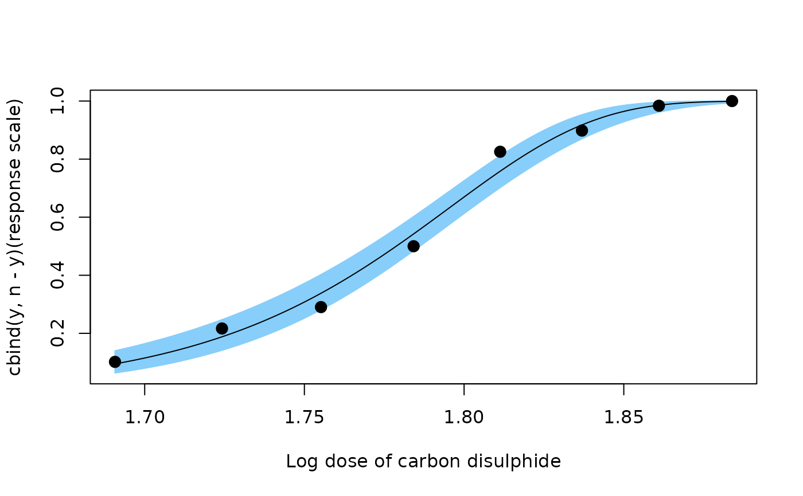
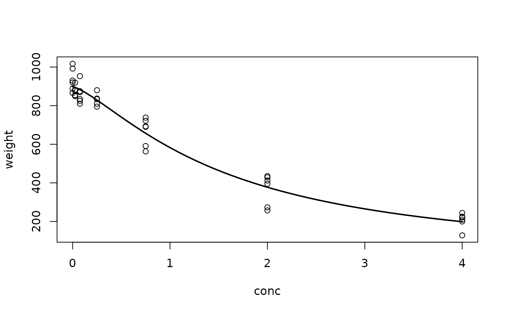
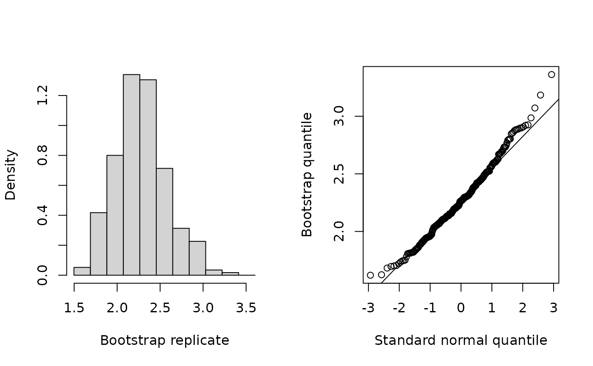
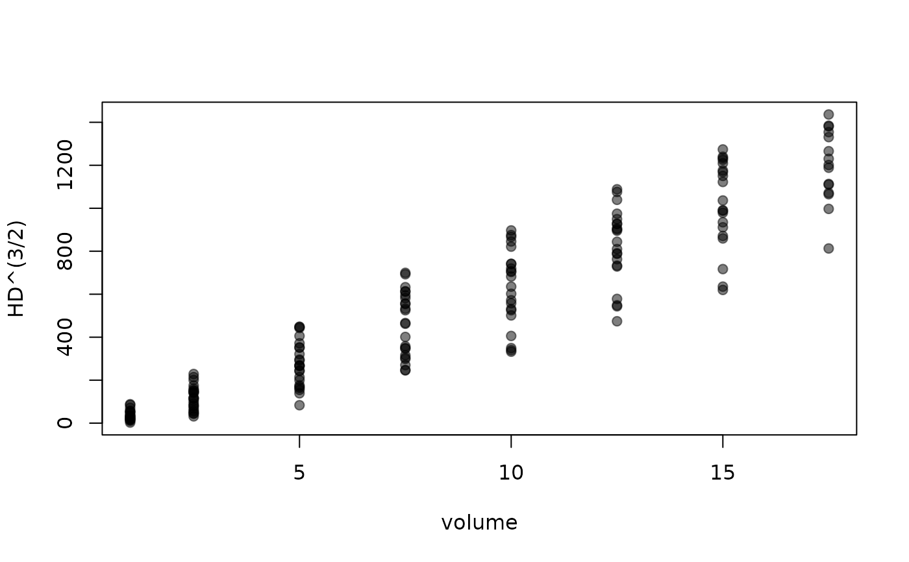

Inverse estimation for linear, nonlinear, and generalized linear models
Source:R/invest.R
invest.RdProvides point and interval estimates for the unknown predictor value that corresponds to an observed value of the response (or vector thereof) or specified value of the mean response. See the references listed below for more details.
Usage
invest(object, y0, ...)
# S3 method for class 'lm'
invest(
object,
y0,
interval = c("inversion", "Wald", "percentile", "none"),
level = 0.95,
mean.response = FALSE,
x0.name,
newdata,
data,
boot.type = c("parametric", "nonparametric"),
nsim = 999,
seed = NULL,
progress = FALSE,
lower,
upper,
extendInt = "no",
tol = .Machine$double.eps^0.25,
maxiter = 1000,
adjust = c("none", "Bonferroni"),
k,
...
)
# S3 method for class 'glm'
invest(
object,
y0,
interval = c("inversion", "Wald", "percentile", "none"),
level = 0.95,
lower,
upper,
x0.name,
newdata,
data,
extendInt = "no",
tol = .Machine$double.eps^0.25,
maxiter = 1000,
...
)
# S3 method for class 'nls'
invest(
object,
y0,
interval = c("inversion", "Wald", "percentile", "none"),
level = 0.95,
mean.response = FALSE,
data,
boot.type = c("parametric", "nonparametric"),
nsim = 1,
seed = NULL,
progress = FALSE,
lower,
upper,
extendInt = "no",
tol = .Machine$double.eps^0.25,
maxiter = 1000,
adjust = c("none", "Bonferroni"),
k,
...
)
# S3 method for class 'lme'
invest(
object,
y0,
interval = c("inversion", "Wald", "percentile", "none"),
level = 0.95,
mean.response = FALSE,
data,
lower,
upper,
q1,
q2,
extendInt = "no",
tol = .Machine$double.eps^0.25,
maxiter = 1000,
...
)Arguments
- object
An object that inherits from class
stats::lm(),stats::glm(),stats::nls(), ornlme::lme().- y0
The value of the observed response(s) or specified value of the mean response. For
stats::glm()objects,y0should be on the scale of the response variable (e.g., a number between 0 and 1 for binomial families).- ...
Additional optional arguments. At present, no optional arguments are used.
- interval
The type of interval required.
- level
A numeric scalar between 0 and 1 giving the confidence level for the interval to be calculated.
- mean.response
Logical indicating whether confidence intervals should correspond to an individual response (
FALSE) or a mean response (TRUE). Forstats::glm()objects, this is alwaysTRUE.- x0.name
For multiple linear regression, a character string giving the name of the predictor variable of interest.
- newdata
For multiple linear regression, a
data.framegiving the values of interest for all other predictor variables (i.e., those other thanx0.name).- data
An optional data frame. This is required if
object$dataisNULL.- boot.type
Character string specifying the type of bootstrap to use when
interval = "percentile". Options are"parametric"and"nonparametric".- nsim
Positive integer specifying the number of bootstrap simulations; the bootstrap B (or R).
- seed
Optional argument to
set.seed().- progress
Logical indicating whether to display a text-based progress bar during the bootstrap simulation.
- lower
The lower endpoint of the interval to be searched.
- upper
The upper endpoint of the interval to be searched.
- extendInt
Character string specifying if the interval
c(lower, upper)should be extended or directly produce an error when the inverse of the prediction function does not have differing signs at the endpoints. The default,"no", keeps the search interval and hence produces an error. Can be abbreviated. See the documentation for thebaseR functionunirootfor details.- tol
The desired accuracy passed on to
stats::uniroot(). Recommend a minimum of1e-10.- maxiter
The maximum number of iterations passed on to
uniroot.- adjust
A logical value indicating if an adjustment should be made to the critical value used in calculating the confidence interval.This is useful for when the calibration curve is to be used multiple, say
k, times.- k
The number times the calibration curve is to be used for computing a confidence interval. Only needed when
adjust = "Bonferroni".- q1
Optional lower cutoff to be used in forming confidence intervals. Only used when
objectinherits from classnlme::lme(). Defaults tostats::qnorm((1+level)/2).- q2
Optional upper cutoff to be used in forming confidence intervals. Only used when
objectinherits from classnlme::lme(). Defaults tostats::qnorm((1-level)/2).
Value
Returns an object of class "invest" or, if
interval = "percentile", of class c("invest", "bootCal", "boot"). The
generic function plot() can be used to plot the output
of the bootstrap simulation when interval = "percentile", and the
result is also a valid "boot" object, so it works with functions from
the boot package (e.g., boot::boot.ci() with the "norm",
"basic", and "perc" interval types).
An object of class "invest" containing the following components:
estimateThe estimate of x0.lwrThe lower confidence limit for x0.uprThe upper confidence limit for x0.seAn estimate of the standard error (Wald and percentile intervals only).biasThe bootstrap estimate of bias (percentile interval only).bootrepsVector of bootstrap replicates (percentile interval only).nsimThe number of bootstrap replicates (percentile interval only).intervalThe method used for calculatinglowerandupper(only used by theprint()method).
References
Greenwell, B. M. (2014). Topics in Statistical Calibration. Ph.D. thesis, Air Force Institute of Technology. URL https://apps.dtic.mil/sti/pdfs/ADA598921.pdf
Greenwell, B. M., and Schubert Kabban, C. M. (2014). investr: An R Package for Inverse Estimation. The R Journal, 6(1), 90–100. URL http://journal.r-project.org/archive/2014-1/greenwell-kabban.pdf.
Graybill, F. A., and Iyer, H. K. (1994). Regression analysis: Concepts and Applications. Duxbury Press.
Huet, S., Bouvier, A., Poursat, M-A., and Jolivet, E. (2004) Statistical Tools for Nonlinear Regression: A Practical Guide with S-PLUS and R Examples. Springer.
Norman, D. R., and Smith H. (2014). Applied Regression Analysis. John Wiley & Sons.
Oman, Samuel D. (1998). Calibration with Random Slopes. Biometrics 85(2): 439–449. doi:10.1093/biomet/85.2.439.
Seber, G. A. F., and Wild, C. J. (1989) Nonlinear regression. Wiley.
Examples
#
# Dobson's beetle data (generalized linear model)
#
# Complementary log-log model
mod <- glm(cbind(y, n-y) ~ ldose, data = beetle,
family = binomial(link = "cloglog"))
plotFit(mod, pch = 19, cex = 1.2, lwd = 2,
xlab = "Log dose of carbon disulphide",
interval = "confidence", shade = TRUE,
col.conf = "lightskyblue")

# Approximate 95% confidence intervals and standard error for LD50
invest(mod, y0 = 0.5)
#> estimate lower upper
#> 1.778753 1.770211 1.786178
invest(mod, y0 = 0.5, interval = "Wald")
#> estimate lower upper se
#> 1.7787530 1.7709004 1.7866057 0.0040065
#
# Nasturtium example (nonlinear least-squares with replication)
#
# Log-logistic model
mod <- nls(weight ~ theta1/(1 + exp(theta2 + theta3 * log(conc))),
start = list(theta1 = 1000, theta2 = -1, theta3 = 1),
data = nasturtium)
plotFit(mod, lwd.fit = 2)

# Compute approximate 95% calibration intervals
invest(mod, y0 = c(309, 296, 419), interval = "inversion")
#> estimate lower upper
#> 2.263854 1.772244 2.969355
invest(mod, y0 = c(309, 296, 419), interval = "Wald")
#> estimate lower upper se
#> 2.2638535 1.6888856 2.8388214 0.2847023
# Bootstrap calibration intervals. In general, nsim should be as large as
# reasonably possible (say, nsim = 9999).
boo <- invest(mod, y0 = c(309, 296, 419), interval = "percentile",
nsim = 300, seed = 101)
boo # print bootstrap summary
#> estimate lower upper se bias
#> 2.2638535 1.7387952 2.8979535 0.3006779 0.0126353
plot(boo) # plot results

#
# Bladder volume example (random coefficient model)
#
# Load required packages
library(nlme)
# Plot data
plot(HD^(3/2) ~ volume, data = bladder, pch = 19,
col = adjustcolor("black", alpha.f = 0.5))

# Fit a random intercept and slope model
bladder <- na.omit(bladder)
ris <- lme(HD^(3/2) ~ volume, data = bladder, random = ~volume|subject)
invest(ris, y0 = 500)
#> estimate lower upper
#> 8.013671 4.097209 12.046123
invest(ris, y0 = 500, interval = "Wald")
#> estimate lower upper se
#> 8.013671 4.053726 11.973616 2.020417